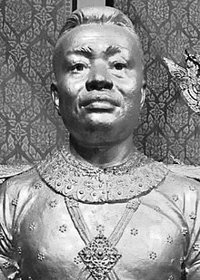
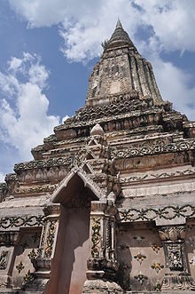

Ang Duong[a] (Khmer: អង្គឌួង [ʔɑŋ ɗuəŋ]; 12 June 1796 – 19 October 1860) was the King of Cambodia from 1841 to 1844 and from 1845 to his death in 1860. Formally invested in 1848,[b] his rule benefited a kingdom that suffered from several centuries of royal dissent and decline.
His politics focused on sustained national unity and identity and the minimization of foreign interference. He issued the first substantial revision of the legal codex in centuries, and he encouraged and supervised religious and cultural reforms. Confronted with increasing Siamese and Vietnamese encroachment, he attempted to establish an alliance with colonial France on a sovereign basis. Although this alliance ultimately culminated in the 90-year period of the French protectorate of Cambodia, King Ang Duong's actions were the foundation for the modern united state of Cambodia.[1] Ang Duong ascended the throne with the title Preah Karuna Preah Bat Samdech Preah Harireak Reamea Issathipadei Ang Duong (Khmer: ព្រះករុណា ព្រះបាទសម្ដេចព្រះហរិរក្សរាមាឥស្សាធិបតី អង្គឌួង).
He was the progenitor of the two main royal houses of Cambodia, the Houses of Norodom and Sisowath.
Ang Duong was the son of King Ang Eng, who ruled Cambodia from 1779 to 1797 and resided at the then capital Oudong. His mother was Ros, a royal consort since 1793 and later Queen Vara. who was of Thai origin (died around 1869). Ang Duong was the father of his successor King Norodom (1834–1904), King Sisowath (1840–1927) and was the great-great-grandfather of King Norodom Sihanouk (1941-2004).[2] Dedicated to extend the royal family line Ang Duong had numerous wives and produced 18 legitimate children - 11 sons and 7 daughters.

King Ang Duong is acclaimed as a promoter of national unity after centuries of regress and venerated among modern Cambodians for his efforts to revitalize the nation and protect the kingdom from foreign invasion. However, limited power, poverty and internal dissension prevented lasting success. He spent 27 years in Bangkok from the age of 16 until aged 43. During his residence in Thailand Ang Duong composed poetry, authored and published classical Cambodian literature such as Neang Kakey and historical works and later promoted the enactment of a comprehensive reformed legal codex and participated in the artistic development of Khmer classical dance.[3][4][5] He translated the Cambodian folktale Vorvong & Sorvong into the Thai language as a birthday present for Thai Crown prince Mongkut. He was appointed governor of the then Thai Mongkol Borey District in 1834.[4] In 1843 Ang Duong was crowned King of Cambodia in Bangkok and returned to Oudong.
There has been considerable debate over the wisdom of Duong's policies. Nonetheless, the idea that he actively sought to subject his kingdom to colonial serfdom has been contested. Contrary to the assertions of some 19th century French authors, Duong did not seek the imposition of a French protectorate over his country, he rather pondered the feasibility of some ill-defined, unequal relationship with France. He certainly was aware, that the French main objective for a protectorate was the containment of the British and the creation of a secure flank for Cochinchina. The historic reality of 19th century Asia reminded any local ruler to seek alignment of some form or the other with at least one of the then technological more advanced Western powers. Ang Duong's death in October 1860 and accumulating foreign pressure convinced his son King Norodom Prohmbarirak to agree to the initially rather moderate French terms.
Cambodia was able to preserve its identity, culture and traditions during the French colonial period, which might otherwise have diffused into the modern Vietnamese and Siamese nations, that could have absorbed all Cambodian territory as their modern border most likely would be the Mekong river.